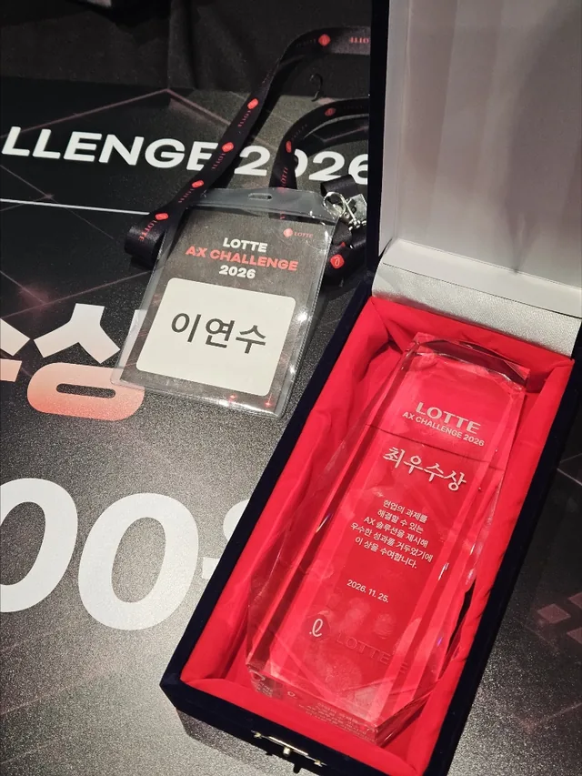
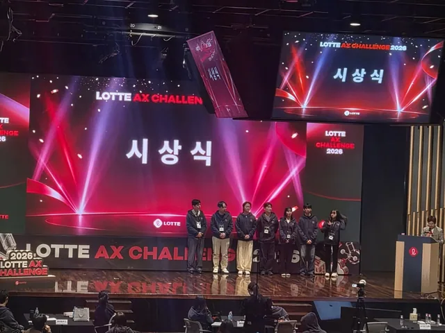

데이터 분석 / AI 서비스 기획 / MVP 구현 / 식품·수출·AX
Next Market
Next Market — K-Food Export Decision & Verification AI Agent
결정론적 코드 계산, 62종 모델 실측 기반 AI 근거·반증, 사내 원가 로컬 격리, 공식 실무 문서 4종 100% 검산까지 잇는 해외 진출 의사결정 에이전트
현재 상태라이브 시연 배포 완료 (6단계·18화면) · LOTTE AX 2026 최우수상
- 기간
- 2026.10–11 (LOTTE AX CHALLENGE 2026 본선 11.24–25)
- 팀
- 단독 참가
- 내 역할
- 개인 프로젝트 · 검증 하네스·6단계 18화면 웹 서비스·멀티모델 실측·본선 발표
- 도구
- 수상
- 최우수 최우수상
LOTTE AX CHALLENGE 2026
내 기여현업 멘토링에서 짚은 수출 병목과 사내 보안 기준을 밤새 코드에 반영해, 6단계·18개 세부 화면 라이브 서비스, 62종 멀티모델 벤치마크, SAP 손익 로컬 브라우저 격리, 공식 실무 문서 4종 사후 검산까지 전 과정을 단독 설계·구현·배포했습니다.
사진·화면
 크게 보기
크게 보기 크게 보기
크게 보기0단계 7단계 근거 수집·검증 파이프라인: 코드 계산·공공 API 7종·근거/반대근거 AI·원문 검토·가드레일 역할 분리출처nextmarket-lotte-ax.vercel.app/flow (새 창)  크게 보기
크게 보기4단계 가격 역산·수익 시뮬레이션과 AI 실무 코파일럿: 자연어 조건(관세 15%·환율 +5%) 즉시 화면 반영 및 공식 원문 출처 연결출처nextmarket-lotte-ax.vercel.app/flow (새 창) 
크게 보기LOTTE AX CHALLENGE 2026 최우수상 상패와 본선 참가자 명찰 (2026.11.25)출처시상식 현장 촬영 
크게 보기LOTTE AX CHALLENGE 2026 본선 시상식 무대 (롯데인재개발원 오산캠퍼스, 2026.11.25)출처시상식 현장 촬영


문제
수출 현업에서 내수 선행 출시 후 사후 규제 검토로 이어지는 조기 단종 병목과, LLM 단독 추천 시 발생하는 숫자 환각·사내 원가 유출 우려를 해결해야 했습니다. 해외 매대 비교군 선행 검증부터 가격 역산, 90일 파일럿 판정, 결재 문서 4종 생성·검산까지 한 흐름으로 설계했습니다.
접근
- 6단계·18개 세부 화면 라이브 서비스(nextmarket-lotte-ax.vercel.app/flow) 구현: 0단계 7단계 파이프라인 실행 → 1단계 지도·Entropy-TOPSIS 1,000회(τ=0.943)·방한 19국 16,110명 채널 분석 → 2단계 단종·외부상표 100% 차단 및 박리다매 100점 분해 → 3단계 0.1초 호버·원문 49건 SHA-256 보관함·aT 통관 문제 40,122행 텍스트 마이닝 → 4단계 가격 역산·SAP 손익 로컬 격리·몬테카를로 1만 회(흑자 확률 93.1%)·90일 판정 → 5단계 공식 실무 문서 4종 생성·사후 검산
- 해외 생산법인 미보유 직수출 후보 3국을 3대 전략으로 분류: 미국 스낵(420억 달러 시장 · 오잉 해물맛 75g 기존 제품 확인), 영국 초코(코코아 변동 30.4%·부가세 20% 장벽 → 부가세 0% 귀리·오렌지 플랩잭 AI 신제품 역제안), 호주 아이스(비유제품 검역 면제·남반구 역계절 → JOEE 그레인 크럼블 초도 소량 검증)
- OpenAI 57종·Gemini 5종 총 62종 멀티모델 API를 호출해 25종·22만 토큰을 실측하고, 코드 하네스로 숫자를 1:1 대조하는 경량 gpt-4o-mini를 채택(건당 $0.0006, 7단계 전체 분석 1회 $0.19 · 월 100회 약 $19)
- 장애 시 Gemini 백업과 23.7ms 코드 안전망으로 자동 전환하고, 유로모니터 원자료·사내 548종 마스터·SAP 손익은 외부 LLM 서버로 전송하지 않고 로컬 브라우저에서만 계산하도록 격리
핵심 판단
- 채택
정량 순위·역산·차단은 파이썬·브라우저 결정론적 코드에 고정하고, AI는 허용 33개 공식 원문 기반 근거·반대 근거·실무 문서 4종 작성에만 투입한 뒤 코드가 숫자를 1:1 사후 대조
- 채택
단위 마진이 높은 소량보다 총 영업이익이 큰 대량 회전 박리다매 원칙으로 후보를 정렬하고, 90일마다 정상가 소진율 75%·재주문율 60% 기준으로 계속·바꿈·멈춤 판정 설계
- 채택
방한 19국(16,110명)에서 서구권 구매 채널이 로드샵·쇼핑몰·백화점(58–70%)에 집중된 점을 반영해, 해외 순위와 분리된 선적 전 국내 테스트(롯데백화점·롯데몰·올리브영) 배치
결과
- 멀티모델 실측 · 1회 비용62종 · $0.1925종·22만 토큰 실측 · 월 100회 약 $19
- 숫자 검산 · 공격 방어100% · 26/26공식 문서 4종 41/41 검산 · 인젝션 방어 26전 26승
- 라이브 화면 · 안전망6단계 · 18화면사내 원가 로컬 격리 · 장애 시 23.7ms 폴백
- LOTTE AX CHALLENGE 2026 최우수상 수상 (롯데웰푸드 현업 과제 단독 참가, 2026.11.25)
- 6단계·18개 세부 화면 라이브 웹 배포(nextmarket-lotte-ax.vercel.app/flow) 및 실시간 AI 실무 코파일럿(자연어 조건 변경·화면 자동 조작) 구현
- 62종 멀티모델 실측(25종·22만 토큰), 지시문 공격(프롬프트 인젝션) 방어 26/26 통과, 공식 실무 문서 4종(임원 품의서·영문 바이어 오퍼시트·5부서 업무협조전·심층 리포트) 숫자 41/41 100% 사후 검산 + HTML/A4 PDF 저장
- 7단계 전체 분석 1회 $0.19(월 100회 약 $19) · 장애 시 23.7ms 코드 안전망 자동 전환 · 사내 SAP 원가 외부 전송 0%
AI 활용
OpenAI gpt-4o-mini와 Gemini 백업이 허용 기관 33곳의 공식 원문(49건 SHA-256 보관)을 바탕으로 근거·반대 근거·실시간 코파일럿·공식 실무 문서 4종을 작성하고, 코드 하네스가 숫자를 1:1 사후 대조해 없는 숫자를 제거합니다. 유로모니터 원자료·사내 548종 마스터·SAP 손익은 외부 모델로 전송하지 않습니다.
한계와 다음 단계
본선 당일 운영 점검(2026.11.25 07:00) 기준 영국 KOTRA 국가정보 미수신·호주 식품 회수 창구 미연결 및 운영 슬롯의 단일 LLM 키 제약이 확인되었으며, AI 응답의 세부 규정 문구는 담당자의 원문 재대조가 필요합니다. 실제 수출 확정에는 점포별 실판매량과 현지 수입자·규제 실사가 필요하며, 원본 저장소는 비공개입니다.